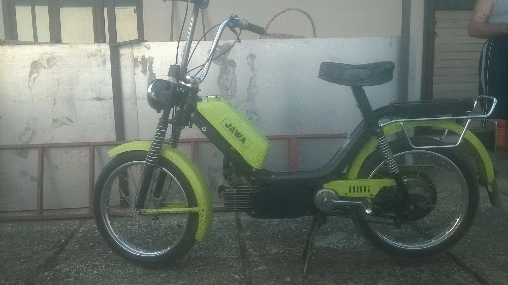
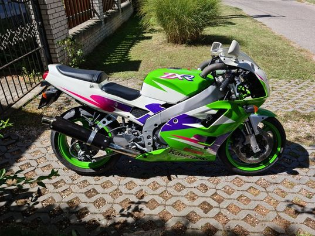

Életem első motorja egy 210-es Babetta volt 1990-ből. Kiváló állapotú volt, gyakorlatilag soha egy forintot nem költöttem rá rajta tanultam meg a motorozás alapjait. Volt egy másik Babettám is, egy 206-os merev vázas kiskerekű Babetta volt. Eredetileg projektnek szántam, de sose került működőképes állapotba, így elbontottam, és eladtam...
Számomra talán a legkedvesebb motor, nem más, mint a Simson S51, 3 ilyen gépem is volt. Egy S51N 1982-ből. Elég ramaty állapotban vettem, mindig szerelni kellett. Ennek ellenére szerettem, megtanultam rajta szerelni.
Utána ugyanúgy egy S51N következett, ez már 1986 végéről. Hibátlan állapotú, utolsó csavarjáig gyári állapotú motor volt. Soha nem kellett szerelni, csak hajtani.
Harmadik Simsonom, mely mai napig nálam van, egy 1990-es S51B1-H40-es motorkerékpár. Ő is nagyon lelakott állapotban került hozzám, első olyan motor volt, amit segítség nélkül újítottam fel. Minden alkatrészét csillogósra políroztam, kopóalkatrészeket cseréltem, motorját teljesen újjáépítettem.
Nagybátyámtól kaptam egy szürke Yamaha Jogot. Jelenleg a legértéktelenebb motorom. Soha nem állt még meg, kimondottan jó vele a városban közlekedni.
A fekete D-Csepel 1957-ben gördült le a gyártósorról. Édesapámmal újítottúk fel, minden egyes alkatrésze vadonat új, a restaurálás óta nagyjából 10 km-t ment, inkább dísz, mint közlekedési eszköz.
Gyerekkori álmom volt egy Kawasaki ZXR400, mely 18 éves koromra telejült. Ez egy 1997-es 4 hengeres sportmotor. Ez az első négyütemű motor, amit szereltem, illetőleg az első "nagymotor", amit vezettem. Őt jelenleg bőven nem tudom kimotorzni, de ami késik nem múlik! Egy nap egy H2-es Kawasakit fogok hajtani! 